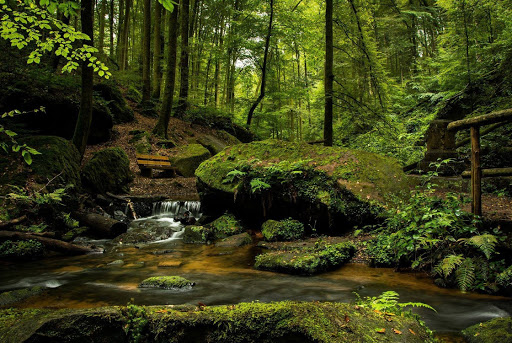

Az erdő olyan természetes vagy telepített élőhely, amelynek jellegét a sűrűn álló fák határozzák meg. Az erdők a Föld talán legkomplexebb életközösségei, amelyben egyaránt megtaláljuk a talajban élő mikroorganizmusokat, a földfelszínen élő mohákat, gombákat, lágy- és fás szárú növényeket. Állatvilága többnyire rendkívül gazdag, hosszú táplálékláncokkal. Az erdei növényzet jellemző szintjei: lombkoronaszint(ek) — a mérsékelt égövi erdőkben jellemzően egy vagy kettő; cserjeszint — a mérsékelt égövi erdőkben jellemzően egy; gyepszint — a mérsékelt égövi erdőkben jellemzően egy; moha-és zuzmószint, gyökérszint, folyondárszint — a mérsékelt égövön jellemzően a galériaerdőkben, epifitonszint — jellemzően a trópusi esőerdőkben. Az erdők különböző formáit a trópusokon és a mérsékelt övben a magashegyek erdőhatáráig megtaláljuk mindenütt, ahol a fák növekedéséhez elég a csapadék és az erdőket az ember nem irtotta ki.  Az erdőben környezet számos paramétere (megvilágítás, hőmérséklet, páratartalom, talajnedvesség stb.) jelentősen eltér az azon kívüli területekétől (Wohlleben, 2015), ezért jellemző életközössége csak megfelelő méretű fás területen tartható fenn. Ezért nem nevezzük erdőnek: a magányos fákat, a néhány, illetve pár tucat fából álló facsoportokat, a fátlan növénytársulásokban szigetszerűen előforduló ligeteket, a fasorokat, az alig néhány fa széles erdősávokat stb. A Magyarországon használatos területi beosztás szerint az erdő minimális területe 0,5 ha (Erdőgazdálkodási, 1964). Jogi értelemben az erdő a termőföld egyik művelési ága.